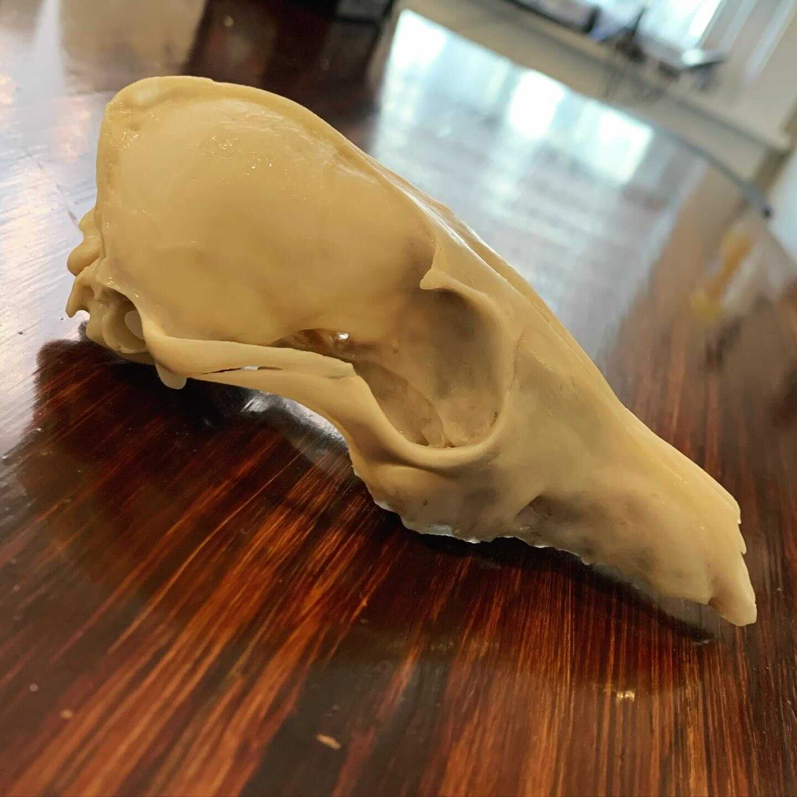

death isn't the end, it's a new beginning
that's our philosophy at tomcat curiosities—
we find beauty in mortality.
our handcrafted, ethically-sourced real bone jewlery is a way to honor the departed.
we create memento moris for the modern mortal
me·men·to mo·ri
[məˈmenˌtō ˈmôrē] noun
a latin expression. “remember that you will die”.
an artistic or symbolic reminder of the inevitability of death.

often times, people see death as the end of one's existence. on the contrary, death is simply another aspect of life. without the end, there can be no more new beginnings for myriad reasons. much of life even depends on death: fForests rely on nutrients released by the soil-dwelling organisms that consume decaying matter; animals rely on forests for food and shelter. it all is a part of nature.